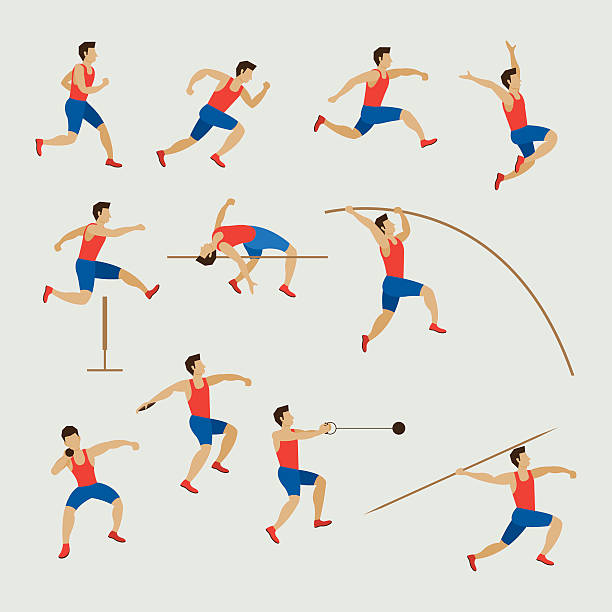

Skills

KEY POINTS:
- A typical skillset of an architects includes: hard (technical) skills, soft (people & social) skills, and business skills.
Architects have to have proper skill sets. By skills, I mean possessing knowledge and the ability to apply relevant knowledge in practice. These skills should include both technical (e.g., cloud architecture or Kubernetes technology) as well as communication and influence skills.
A typical skillset of an architects includes (I provide links to some of my tools I found useful for obtaining these skills):
- Hard (technical) skills, including extensive knowledge of for both new technology and legacy technology stacks,
- Soft skills, and
- Business Domain knowledge.
Hard Skills (Technical Architecture)
Hard (technical) skills are the most fundamental architectural skills and tehy should include extensive knowledge of both new technology and legacy technology stacks). Here are some of typical technical skills that architects need in their work:
- System design,
- Engineering processes,
- Design patterns and tactics,
- Security and privacy by design,
- System optimizations,
- Source code structures and maintainability,
- Reliability and stability (anti)patterns and tactics,
- Usability.
Soft Skills (Social Architecture)
Soft skills relate to a range of people and socila skills, including:
- Communication skills, written, visual, verbal (presentation), and listening skills.
- Networking and collaboration skills, including partnering with others, including peers, more junior and senior people, managers and excutives.
- Organizational and time management skills, including prioritization, goal-setting, task management, delegation.
- Analytical, strategic thinking, and problem-solving skills, such us finding and developing unique opportunities, to create value within an organization.
Business Skills (Business Architecture)
Lastly, architects need to understand business and have a solid knowledge about:
- General business concepts knowledge (The Personal MBA book being my favorite resource to get familiar with such concepts).
- Specific business domains of the organization.
Being Architect ← Architects as Superglue |
Being Architect Impact → |